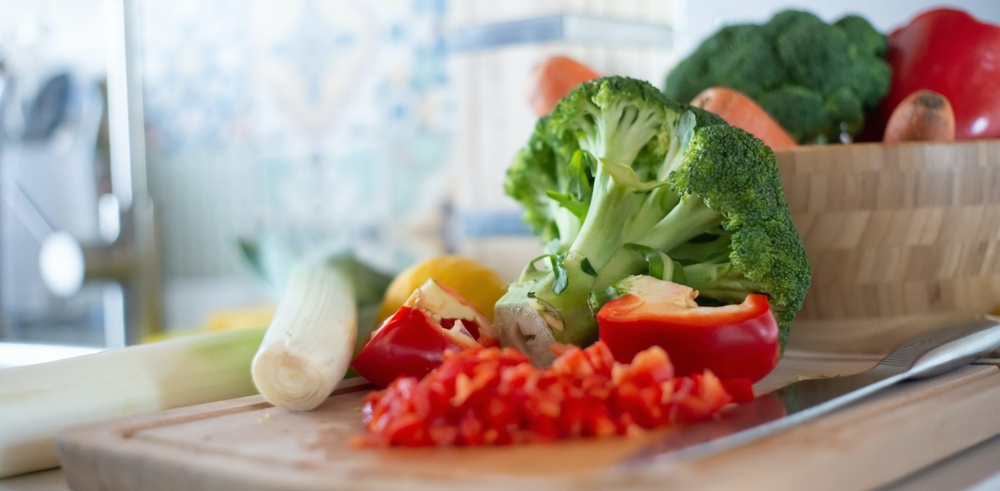

<section class="about">
    <div class="container">
        <div class="content">
            

        <h1>NATURLIG KOST</h1>
        <h2>”Låt maten vara din medicin och din medicin vara din mat”
         <br>Hippokrates</h2>
        <div class="andlig">   
           <div class="texta">  
              <p>
                2022 ligger Sverige på en mycket osmickrande förstaplats på topplistan över länder i Europa som äter mest skräpmat. 
                Vi äter mest industriellt tillverkad ultraprocessad mat av alla länder i Europa. Detta betyder att vi får en stor del av vårt dagliga energiintag från näringsfattig mat som färdigmat, korv, fryspizzor, veganska köttsubstitut, fruktyoghurt och så vidare. Sverige är även det land i värden där man äter mest godis.
                </p>
            </div>

            
            <!------->
            <h3>Hur mår du av maten du äter och hur reagerar din kropp?</h3>
            <div class="naturligKost">   
                <div class="text1"> 
                   <p>
                    Människan är enormt tålig och kan klara av att leva på ensidig och näringsfattig kost bestående av till exempel snabbmat, halvfabrikat, smörgåsar, godis, snacks, glass och fikabröd. Den  här maten kanske ger dig njutning i stunden men den får dig inte att må bra i längden. Det är därför inte det bästa valet om du vill leva ett friskt liv med bra livskvalitet och mycket energi. Kunskap ger dig makt över din hälsa.
                    Man kan fråga sig hur mycket av den mat i butikerna som egentligen borde få kallas för mat när man tittar på dom långa 
                   </p>
                 </div>
     
                 <div class="text2">  
                     <p>
                        innehållsförteckningarna med E-ämnen, artificiella smaker, sötningsmedel, konserveringsmedel, färgämnen, emulgeringsmedel och så vidare. En stor del av maten är processad, bearbetad, genetiskt modifierad och besprutad. Man kan nästa likna det vid någon slags ”hittepå-mat”. Dom här ämnena hör inte hemma i en människokropp och är förknippade med en rad olika symtom som till exempel matsmältningsproblem, allergier, hyperaktivitet hos barn, astma, cancer, huvudvärk, skador på centrala nervsystemet och mycket annat. 
                     </p>
                 </div>
             </div>    

            <div class="text3">
                <h3>Kroppen talar till oss på många sätt. När vi lär oss att förstå vad den försöker säga till oss har vi också nycklar till bättre hälsa.</h3>
                <p>
                    Våra kroppar är biologiska och mår bäst av naturlig och näringsrik mat. Det vill säga mat som är ekologisk och lagad på naturliga råvaror (utan innehållsförteckning) från en så naturlig originalmiljö som möjligt. Riktig mat helt enkelt.  Sådan mat som vi är skapta för att äta. Frukt, bär, grönsaker, baljväxter, rotfrukter, nötter, frön, örter, groddar, alger (om du är vegan), bra fettsyror med mera.<br><br> 

                    Om du äter fisk så kolla upp var den är fångad då fisk kan innehålla stora mängder miljögifter. Om du äter kyckling och kött så köp gärna från en ekologisk gård i din närhet där du vet att djuren har haft den bästa möjliga tillvaron och att dom får ett så skonsamt avslut som möjligt. Eller viltkött.<br><br>
                    Den mat vi äter påverkar kroppen både positivt och negativt beroende på vad vi stoppar i den. För att på naturlig väg stötta kroppens självläkande förmåga behöver vi därför öka mängden av sådan mat som stärker vår kropp och minska och plocka bort sådant som är skadligt för kroppen. Det betyder inte att vi ska bli fanatiska. Att börja med att byta ut en värsting och ersätta den med ett hälsosammare alternativ är en bra början.

                </p>
                <h4>Föreläsning under uppbyggnad.</h4>

                <h5>Prova gärna att äta en mer naturlig kost under en period du också!</h5>  

                    <br><br>
                   <h6>Fokusera på bra ekologiska och så rena råvaror som möjligt. Var noga med att ha stor variation i din kost så att den blir balanserad från olika källor. Minska eller uteslut socker, laktos, gluten och precessad mat och undersök vad som händer med din kropp och hälsa.
                </h6>
            </div>
        </div>    
        </div>
    </div>    
</section>